長期トレンド
JKMとJEPXシステムプライスの推移グラフ
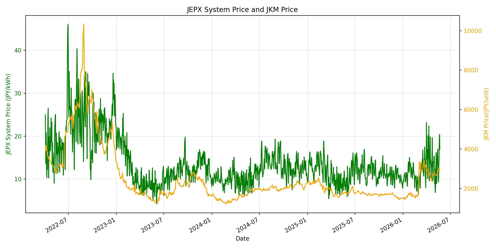
WTIの推移グラフ

JEPXエリアプライスグラフ（直近一年分）
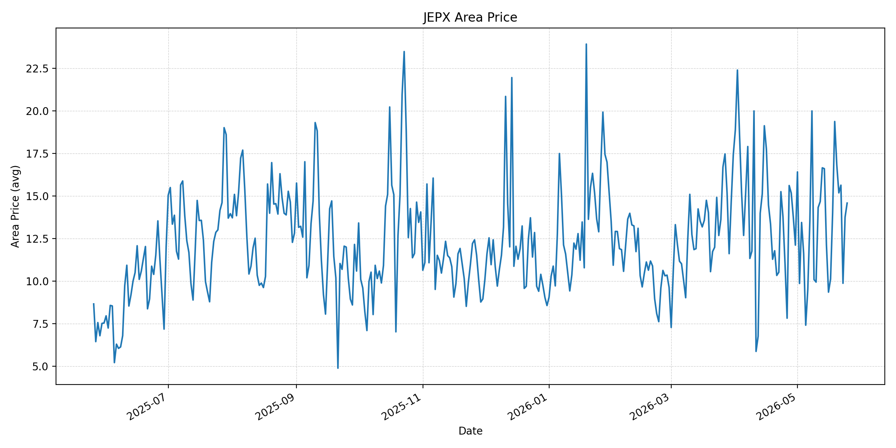
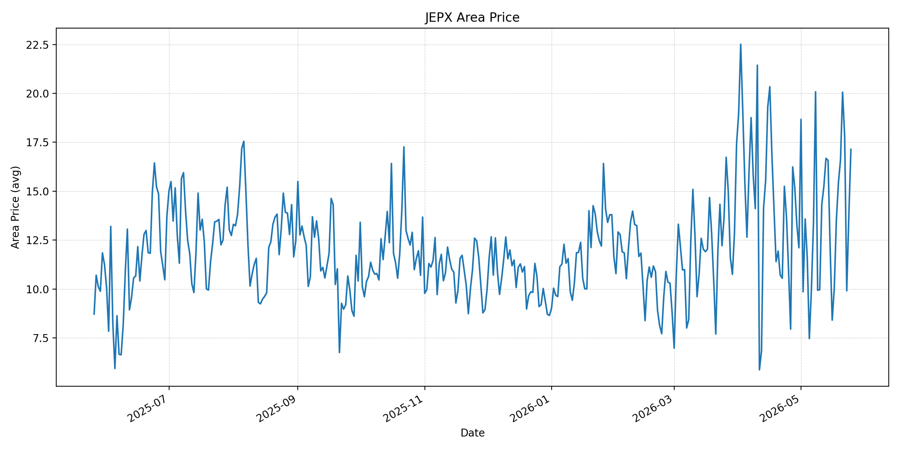
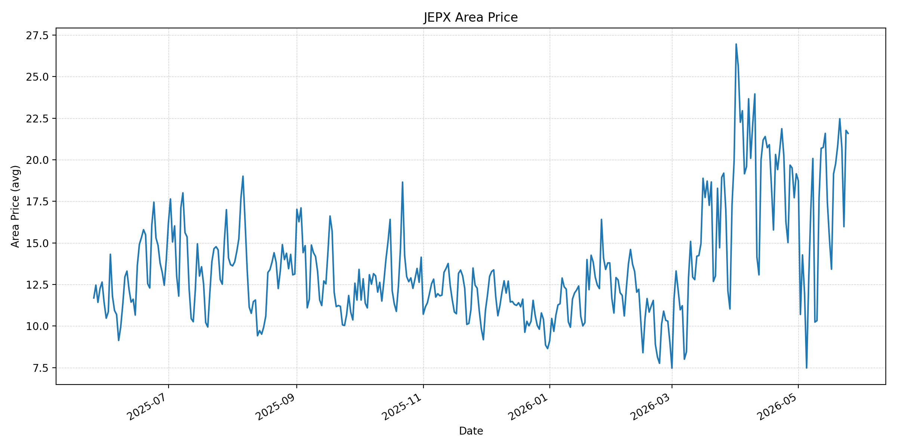
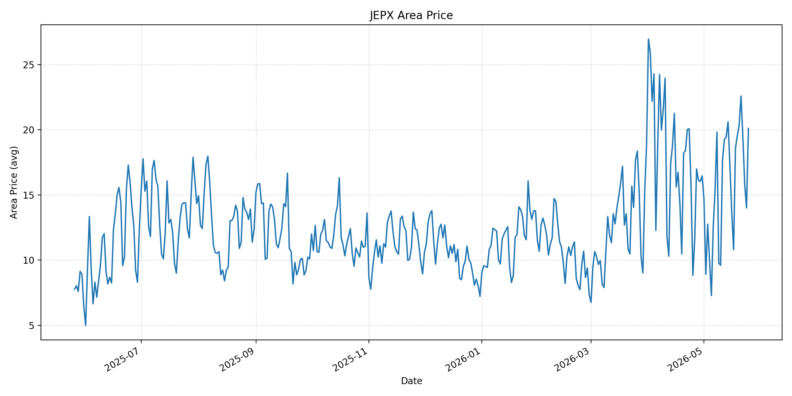
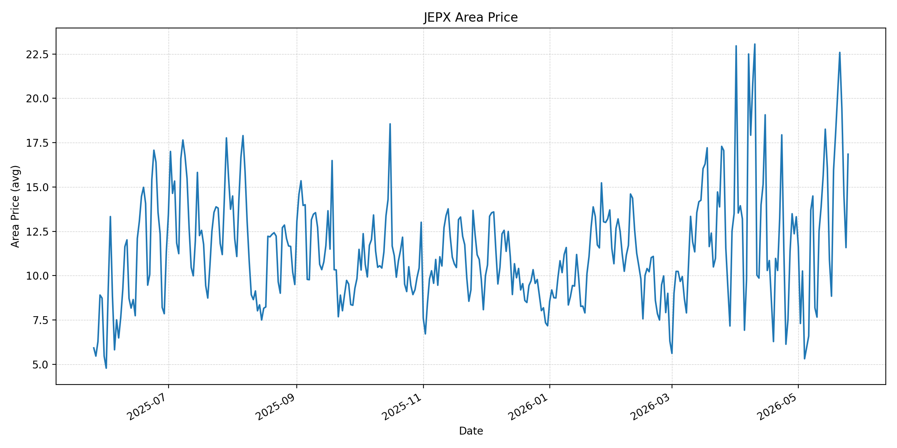
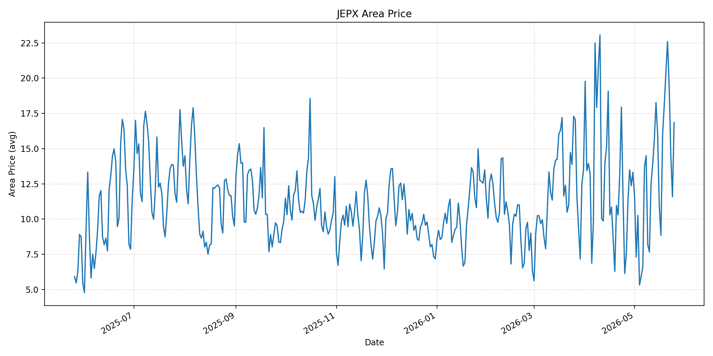
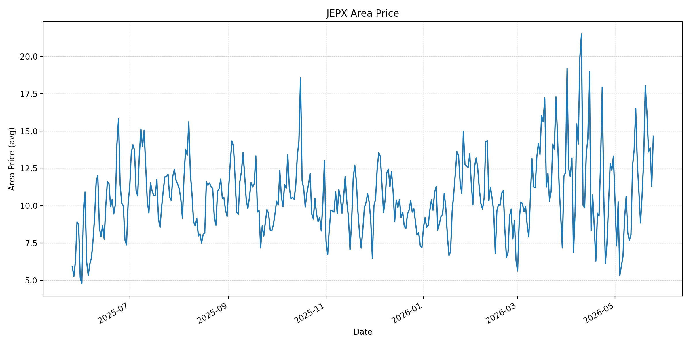
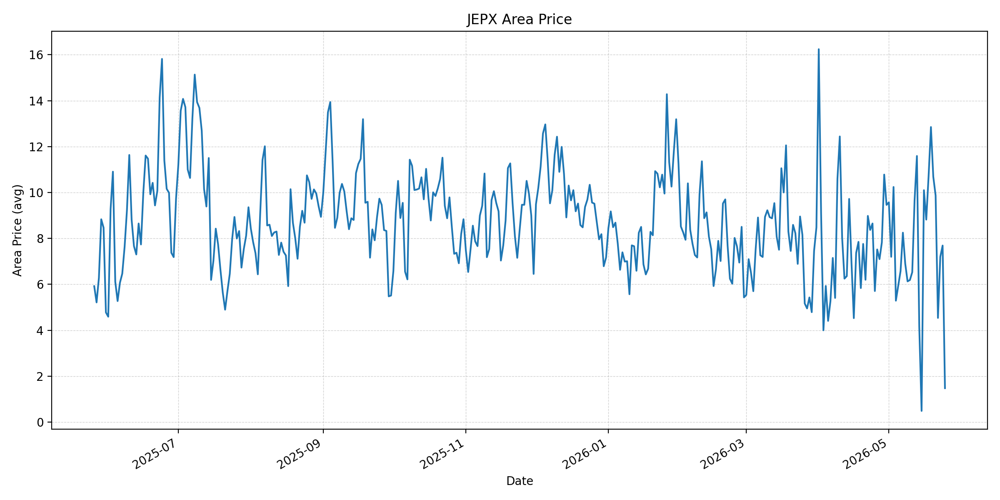
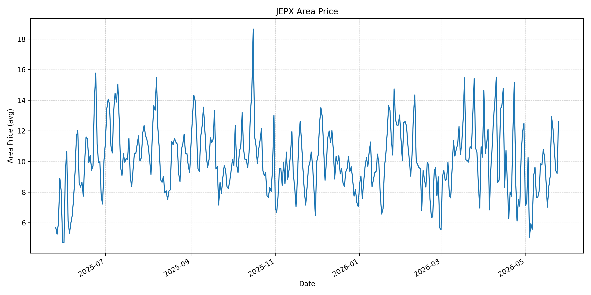
短期トレンド
JKMとJEPXシステムプライスの推移グラフ
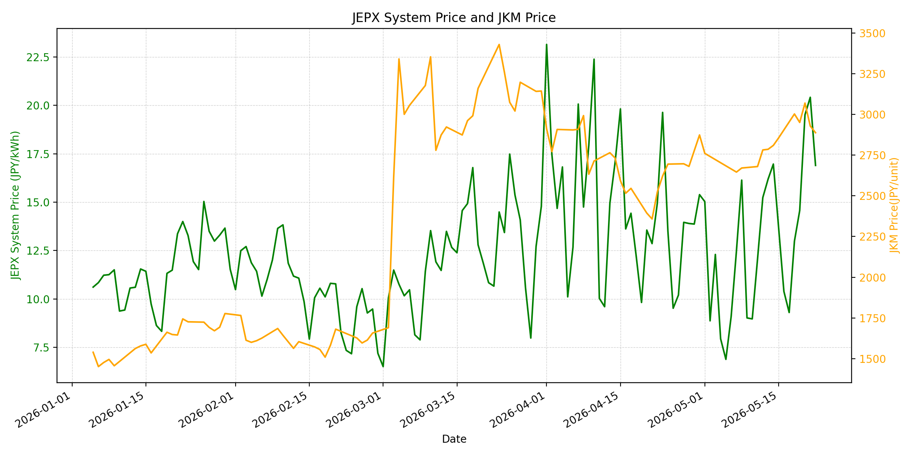
WTIの推移グラフ
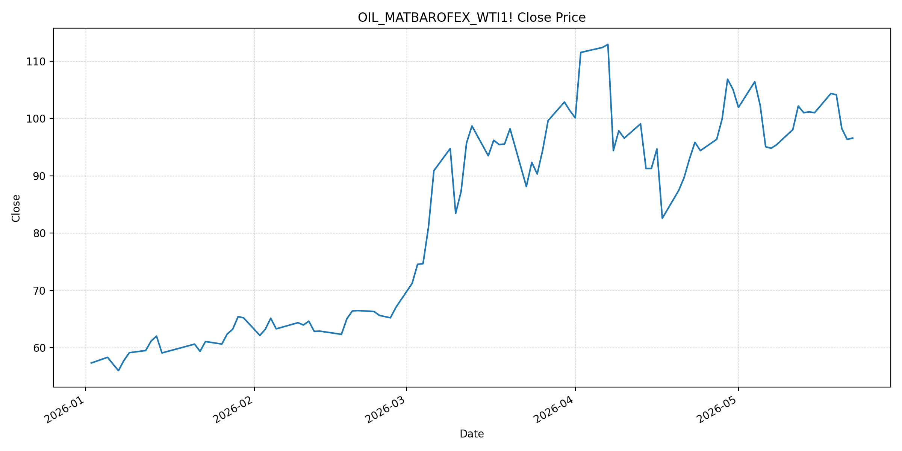
JEPXシステムプライス
JEPXは受渡日ベースの最新非空値で評価しています。最新値は 2026-05-25 分です。先週終値は 2026-05-18 時点の直近値、先月終値は 2026-04-30 時点の直近値で評価しています。
| エリア | 当日価格 | 前日価格 | 前日比（％） | 先週終値 | 先週比（％） | 先月終値 | 先月比（％） | 過去最高値 | 最高値比（％） |
|---|---|---|---|---|---|---|---|---|---|
| システム | 17.27 | 13.67 | 26.34 | 12.99 | 32.95 | 15.39 | 12.22 | 64.06 | -73.04 |
| 北海道 | 14.58 | 13.75 | 6.04 | 14.02 | 3.99 | 12.11 | 20.4 | 73.92 | -80.28 |
| 東北 | 17.14 | 13.75 | 24.65 | 13.52 | 26.78 | 12.11 | 41.54 | 84.92 | -79.82 |
| 東京 | 21.59 | 21.77 | -0.83 | 19.16 | 12.68 | 19.16 | 12.68 | 86.13 | -74.93 |
| 中部 | 20.11 | 14 | 43.64 | 18.58 | 8.23 | 16.47 | 22.1 | 52.06 | -61.37 |
| 北陸 | 16.85 | 11.58 | 45.51 | 15.95 | 5.64 | 13.32 | 26.5 | 46.48 | -63.75 |
| 関西 | 16.85 | 11.58 | 45.51 | 15.95 | 5.64 | 13.32 | 26.5 | 46.48 | -63.75 |
| 中国 | 14.65 | 11.29 | 29.76 | 10.72 | 36.66 | 13.32 | 9.98 | 46.48 | -68.48 |
| 四国 | 1.48 | 7.69 | -80.75 | 10.72 | -86.19 | 9.46 | -84.36 | 46.48 | -96.82 |
| 九州 | 12.6 | 9.22 | 36.66 | 8.35 | 50.9 | 12.5 | 0.8 | 40.54 | -68.92 |
LNG先物価格
最新値は 2026-05-22 の LNG(close) です。先週終値は 2026-05-15 時点の直近値、先月終値は 2026-04-30 時点の直近値で評価しています。
| 当日価格 | 前日価格 | 前日比（％） | 先週終値 | 先週比（％） | 先月終値 | 先月比（％） | 過去最高値 | 最高値比（％） |
|---|---|---|---|---|---|---|---|---|
| 2888 | 2929 | -1.4 | 2856 | 1.12 | 2874 | 0.49 | 10319 | -72.01 |
石油先物価格
最新値は 2026-05-22 の OIL(close) です。先週終値は 2026-05-15 時点の直近値、先月終値は 2026-04-30 時点の直近値で評価しています。
| 当日価格 | 前日価格 | 前日比（％） | 先週終値 | 先週比（％） | 先月終値 | 先月比（％） | 過去最高値 | 最高値比（％） |
|---|---|---|---|---|---|---|---|---|
| 96.6 | 96.35 | 0.26 | 101.02 | -4.38 | 105.07 | -8.06 | 123.7 | -21.91 |
ニュース
イラン情勢に関するニュース
- 2026年5月25日、Reutersは、米国とイランが和平合意に近づいているとの見方から原油が2週間ぶり安値を付けたと報じました。一方、ホルムズ海峡の封鎖を含む重要論点ではなお隔たりがあり、トランプ米大統領も合意を急がない姿勢を示しています。 参照: WTVB/Reuters, 2026-05-25
- 2026年5月24日、Axiosは、米イラン紛争終結に向けた暫定的な枠組みが浮上し、ブレントが100ドルを下回ったと報じました。ただし、合意が成立しても海峡の安全確認、滞留船舶の退避、生産再開には時間がかかると指摘しています。 参照: Axios, 2026-05-24
ホルムズ海峡経由の石油・LNGに関するニュース
- 2026年5月25日、Reutersは、和平期待で原油が下落した一方、ホルムズ海峡を通じた石油供給制約は続いていると報じました。紛争前の海峡は世界の石油・LNG輸送の重要ルートであり、正常化には数カ月を要する可能性があります。 参照: WTVB/Reuters, 2026-05-25
- 2026年5月25日、名古屋テレビは、ホルムズ海峡を通過した原油タンカー「出光丸」が伊勢湾に入り、サウジアラビア産原油約200万バレルを積載していると報じました。日本政府は通過交渉に関与し、通航料は支払っていないとされています。 参照: 名古屋テレビ, 2026-05-25
ホルムズ海峡経由でない石油・LNGに関するニュース
- 2026年5月24日、Axiosは、サウジアラビアとUAEがホルムズを迂回するパイプライン利用を増やしているものの、通常時に海峡を通る量を補うには不足していると報じました。非ホルムズ供給は補完策であり、完全な代替ではありません。 参照: Axios, 2026-05-24
- 過去24時間で、日本向けの非ホルムズ新規大型調達に関する強い追加報道は確認できませんでした。直近では、4月の日本貿易統計で中東原油輸入の大幅減少と米国原油輸入の増加が確認されており、代替調達は進んでいます。 参照: TBS CROSS DIG with Bloomberg, 2026-05-21
日本国内のイラン戦争に関係するニュース
- 2026年5月25日、出光丸が伊勢湾に到着し、原油は愛知県知多市の出光興産愛知事業所へ運び込まれる予定です。ホルムズ通過済みの大型原油タンカー到着は、短期の国内物理供給不安を和らげる材料です。 参照: 名古屋テレビ, 2026-05-25
- 過去24時間で、JEPX制度や国内電力市場制度に直接影響する新規の重大発表は確認できませんでした。和平期待で原油は下落しましたが、LNGと船腹制約は残り、火力燃料費への影響は継続します。 参照: WTVB/Reuters, 2026-05-25
インサイト
ニュース事項による日本の電力市場への影響（短期：数日〜1週間）
- JEPXシステムプライスは 17.27 円/kWhで前日比 26.34%、先週比 32.95%、先月比 12.22% 上昇しました。東京 21.59、中部 20.11 が高く、四国 1.48 とのエリア差は非常に大きい状態です。
- LNGは 2888 と前日比 -1.4%、OILは 96.6 と前日比 0.26% です。和平期待による原油下落は短期の燃料心理を冷やしますが、ホルムズ輸送正常化には時間がかかるため、数日から1週間のJEPXは需給とエリア差で上下しやすいです。
- 出光丸の到着は国内供給不安を和らげます。ただし、東京・中部の高値が続く一方で西日本の一部が低く、燃料ニュースだけではなく太陽光出力、需要、連系線制約を併せて見る必要があります。
ニュース事項による日本の電力市場への影響（長期：1ヶ月〜半年）
- OILは先月比 -8.06% まで下がり、LNGは先月比 0.49% とほぼ横ばいです。和平合意が進めば原油の上振れリスクは縮小しますが、海峡の安全確認、滞留船舶の退避、生産再開が遅れれば、LNGと輸送コストは高止まりしやすくなります。
- サウジ・UAEの迂回パイプラインや日本の代替調達は供給安定化に有効ですが、通常のホルムズ通過量を完全には置き換えられません。1ヶ月から半年では、原油価格の下落よりも物流・保険・船腹コストの残存が電力燃料費に効く可能性があります。
- JEPXはシステムで先月比 12.22%、東北 41.54%、北陸・関西 26.5%、九州 0.8% と地域差が残ります。長期の調達では全国平均だけでなく、エリア別の高値持続リスクと低価格エリアの変動リスクを分けてヘッジする判断が妥当です。